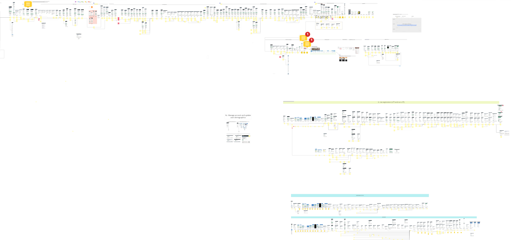

This post is about how I influenced the service and interaction design team on a major programme to adopt new processes
What is a prototype for?
Several weeks after working on the Testing programme I noticed that all the designers from consultancies were only trained to use Sketch.
Their agency design approach followed one process:
draw up some ideas quickly, get them signed off quickly, and code and deploy the solution!
While it seemed efficient as a process could get, things became problematic when the team needed to start testing these designs every week. This was an important step to put a few brakes in place to check solutions worked for users, before their national release to the public.
We conducted a few rounds of usability testing using these Sketch prototypes; it works o.k. for some projects as you can make the prototype clickable, however
Sketch prototypes are really not ideal for regular usability testing because:
• you can’t see what a design looks like on different devices (e.g. a mobile view),
• users cannot interact with form elements,
• form errors / validation don’t work,
• users are exposed to button prompts every time they click the incorrect button, leading them to the answer each time, and
• users may see the comments from designers!
These factors make for a very sketchy usability testing session! The participant is unable to experience the service as they would if they were at home on their own. It gives the research and design team mcch less confidence in the research findings.
For live-like usability testing I would much prefer to give the participant a link to the prototype that will work on any device they are using, at any resolution, with any additional software tools they have installed.
I made the case to the consultancy designers that they needed to create these prototypes in html, using the Gov.uk prototype kit; however as they had not done this before as most hadn’t worked as interaction designers on government projects before.
“If you know what good looks like – don’t stand still in a crisis – move things forward!”
Honestly, after working with NHS designers for four years I was really frustrated at the unavailability of an html prototype.
I decided to take things into my own hands and two days out of my role as a researcher to build the first end-to-end journey using the Gov.uk prototype kit.
We tested using this version for two weeks, while NHS Digital quickly redeployed other interaction designers from national programmes to continue the design work and train consultancy staff in best practices for using the prototype kit.
In the end, the outcome was positive and the researchers have had good quality prototypes to work going forward; although at the time it was slightly awkward to need to step over an imaginary UR/UX/UI “role boundary” to help speed up an inevitable change.
Obviously this caused some challenges and debates within the team at the time, but from that point on many benefits of being able to design with version controls, test on any device, conduct unmoderated testing. These benefits hopefully far outweighed any initial discomfort within the team.
Map of the Testing world
Another new concept I introduced within the team fairly early on was creating an end-to-end journey map. From the initial gov.uk prototype I created, I took screenshots of every page and linked these up as a flow in Miro (Yes, it took a while!)
The primary reason at the time was to help capture notes from multiple user research sessions in the same place, so that we could identify which screens were most problematic by ‘virtually affinity sorting’ the findings.
This approach was then adopted by the service designers and interaction designers, who continued to maintain up to date maps of the current, the past and the future design iterations week on week.
The resource has been great for user researchers, designers, product, clinical and governance colleagues, but more generally anyone who recently joins the team they can instantly view what the end-to-end service looks like in one place.
